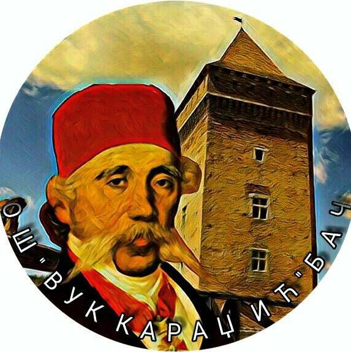
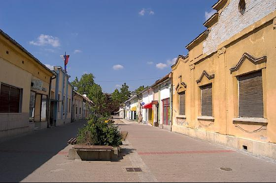

Podaci o autoru
| Autor sajta | |
|---|---|
| Ime i prezime: | Milena Jelić |
| Odelenje: | IV3 |
| Adresa: | Borisa Kidriča 19, Bač |
| Broj telefona: | 770-941 |
Obrazovanje:
Osnovno: Srednje: Buduće:

O Bačkoj Palanci:
Bačka Palanka je gradsko naselje u Srbiji u istoimenoj opštini u Južnobačkom okrugu. Prema popisu iz 2011. godine bilo je 28239 stanovnika.
Površina: 579 km2
